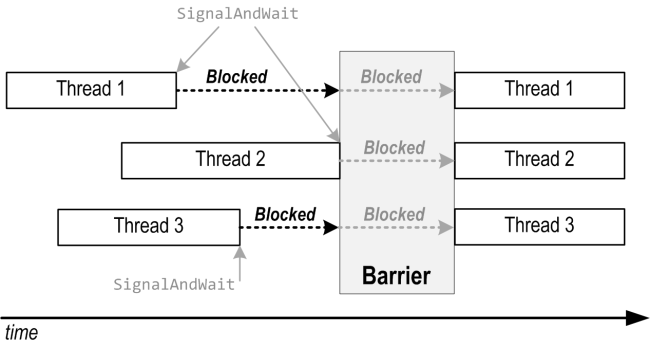

Threading in C#
Joseph Albahari
Last updated: 2011-4-27
Translations:
Chinese
| Czech
| Persian
| Russian
| Japanese
Download PDF
Part 4: Advanced Threading
Earlier, we said that the need for synchronization arises
even in the simple case of assigning or incrementing a
field. Although locking can always satisfy this
need, a contended lock means that a thread must block,
suffering the overhead of a context switch and the latency of being descheduled,
which can be undesirable in highly concurrent and performance-critical
scenarios. The .NET Framework’s nonblocking
synchronization constructs can perform simple operations without ever blocking,
pausing, or waiting.
Writing nonblocking or lock-free multithreaded code
properly is tricky! Memory barriers, in particular, are easy to get wrong (the volatile keyword is even easier to get wrong). Think
carefully whether you really need the performance benefits before dismissing
ordinary locks. Remember that acquiring and releasing an uncontended lock takes
as little as 20ns on a 2010-era desktop.
The nonblocking approaches also work across multiple
processes. An example of where this might be useful is in reading and writing
process-shared memory.
Consider the following example:
class Foo
{
int _answer;
bool _complete;
void A()
{
_answer = 123;
_complete = true;
}
void B()
{
if (_complete) Console.WriteLine (_answer);
}
}
If methods A and B ran concurrently on different threads, might it be
possible for B to write “0”? The answer is yes — for
the following reasons:
- The compiler, CLR, or CPU may reorder your program's
instructions to improve efficiency.
- The compiler, CLR, or CPU may introduce caching optimizations
such that assignments to variables won't be visible to other threads right
away.
C# and the runtime are very careful to ensure that such
optimizations don’t break ordinary single-threaded code — or multithreaded code
that makes proper use of locks. Outside of these scenarios, you must explicitly
defeat these optimizations by creating memory
barriers (also called memory fences)
to limit the effects of instruction reordering and read/write caching.
The simplest kind of memory barrier is a full memory barrier (full
fence) which prevents any kind of instruction reordering or caching
around that fence. Calling Thread.MemoryBarrier
generates a full fence; we can fix our example by applying four full fences as
follows:
class Foo
{
int _answer;
bool _complete;
void A()
{
_answer = 123;
Thread.MemoryBarrier(); // Barrier 1
_complete = true;
Thread.MemoryBarrier(); // Barrier 2
}
void B()
{
Thread.MemoryBarrier(); // Barrier 3
if (_complete)
{
Thread.MemoryBarrier(); // Barrier 4
Console.WriteLine (_answer);
}
}
}
Barriers 1 and 4 prevent this example from writing “0”.
Barriers 2 and 3 provide a freshness guarantee: they ensure that if B
ran after A, reading _complete would evaluate to true.
A full fence takes around ten nanoseconds on a 2010-era desktop.
The following implicitly generate full fences:
By virtue of that last point, the following is thread-safe:
int x = 0;
Task t = Task.Factory.StartNew (() => x++);
t.Wait();
Console.WriteLine (x); // 1
You don’t necessarily need a full fence with every
individual read or write. If we had three answer fields, our example would
still need only four fences:
class Foo
{
int _answer1, _answer2, _answer3;
bool _complete;
void A()
{
_answer1 = 1; _answer2 = 2; _answer3 = 3;
Thread.MemoryBarrier();
_complete = true;
Thread.MemoryBarrier();
}
void B()
{
Thread.MemoryBarrier();
if (_complete)
{
Thread.MemoryBarrier();
Console.WriteLine (_answer1 + _answer2 + _answer3);
}
}
}
A good approach is to start by putting memory barriers before
and after every instruction that reads or writes a shared field, and then strip
away the ones that you don’t need. If you’re uncertain of any, leave them in.
Or better: switch back to using locks!
Another (more advanced) way to solve this problem is to
apply the volatile keyword to the _complete field:
volatile bool _complete;
The volatile keyword instructs
the compiler to generate an acquire-fence on
every read from that field, and a release-fence
on every write to that field. An acquire-fence prevents other reads/writes from
being moved before the fence; a release-fence prevents other
reads/writes from being moved after the fence. These “half-fences” are
faster than full fences because they give the runtime and hardware more scope
for optimization.
As it happens, Intel’s X86 and X64 processors always
apply acquire-fences to reads and release-fences to writes — whether or not you
use the volatile keyword — so this keyword has no
effect on the hardware if you’re using these processors. However, volatile does have an effect on optimizations
performed by the compiler and the CLR — as well as on 64-bit AMD and (to a
greater extent) Itanium processors. This means that you cannot be more relaxed
by virtue of your clients running a particular type of CPU.
(And even if you do use volatile,
you should still maintain a healthy sense of anxiety, as we’ll see shortly!)
The effect of applying volatile
to fields can be summarized as follows:
| First instruction |
Second instruction |
Can they be swapped? |
| Read |
Read |
No |
| Read |
Write |
No |
| Write |
Write |
No (The CLR ensures that write-write operations are never
swapped, even without the volatile keyword) |
| Write |
Read |
Yes!
|
Notice that applying volatile
doesn’t prevent a write followed by a read from being swapped, and this can
create brainteasers. Joe Duffy illustrates the problem well with the following
example: if Test1 and Test2
run simultaneously on different threads, it’s possible for a
and b to both end up with a value of 0 (despite the
use of volatile on both x
and y):
class IfYouThinkYouUnderstandVolatile
{
volatile int x, y;
void Test1() // Executed on one thread
{
x = 1; // Volatile write (release-fence)
int a = y; // Volatile read (acquire-fence)
...
}
void Test2() // Executed on another thread
{
y = 1; // Volatile write (release-fence)
int b = x; // Volatile read (acquire-fence)
...
}
}
The MSDN documentation states that use of the volatile keyword ensures that the most up-to-date value is
present in the field at all times. This is incorrect, since as we’ve seen, a
write followed by a read can be reordered.
This presents a strong case for avoiding volatile: even if you understand the subtlety in this
example, will other developers working on your code also understand it? A full
fence between each of the two assignments in Test1
and Test2 (or a lock) solves
the problem.
The volatile keyword is not
supported with pass-by-reference arguments or captured local variables: in
these cases you must use the VolatileRead and VolatileWrite methods.
VolatileRead and VolatileWrite
The static VolatileRead and VolatileWrite methods in the Thread
class read/write a variable while enforcing (technically, a superset of) the
guarantees made by the volatile keyword. Their
implementations are relatively inefficient, though, in that they actually
generate full fences. Here are their complete implementations for the integer
type:
public static void VolatileWrite (ref int address, int value)
{
MemoryBarrier(); address = value;
}
public static int VolatileRead (ref int address)
{
int num = address; MemoryBarrier(); return num;
}
You can see from this that if you call VolatileWrite followed by VolatileRead,
no barrier is generated in the middle: this enables the same brainteaser
scenario that we saw earlier.
Memory barriers and locking
As we said earlier, Monitor.Enter
and Monitor.Exit both generate full fences. So if we
ignore a lock’s mutual exclusion guarantee, we could say that this:
lock (someField) { ... }
is equivalent to this:
Thread.MemoryBarrier(); { ... } Thread.MemoryBarrier();
Use of memory barriers
is not always enough when reading or writing fields in lock-free code.
Operations on 64-bit fields, increments, and decrements require the heavier
approach of using the Interlocked helper class. Interlocked also provides the Exchange
and CompareExchange methods, the latter enabling
lock-free read-modify-write operations, with a little additional coding.
A statement is intrinsically atomic
if it executes as a single indivisible instruction on the underlying processor.
Strict atomicity precludes any possibility of preemption. A simple read or
write on a field of 32 bits or less is always atomic. Operations on 64-bit
fields are guaranteed to be atomic only in a 64-bit runtime environment, and
statements that combine more than one read/write operation are never atomic:
class Atomicity
{
static int _x, _y;
static long _z;
static void Test()
{
long myLocal;
_x = 3; // Atomic
_z = 3; // Nonatomic on 32-bit environs (_z is 64 bits)
myLocal = _z; // Nonatomic on 32-bit environs (_z is 64 bits)
_y += _x; // Nonatomic (read AND write operation)
_x++; // Nonatomic (read AND write operation)
}
}
Reading and writing 64-bit fields is nonatomic on 32-bit
environments because it requires two separate instructions: one for each 32-bit
memory location. So, if thread X reads a 64-bit value while thread Y is
updating it, thread X may end up with a bitwise combination of the old and new
values (a torn read).
The compiler implements unary operators of the kind x++ by reading a variable, processing it, and then writing
it back. Consider the following class:
class ThreadUnsafe
{
static int _x = 1000;
static void Go() { for (int i = 0; i < 100; i++) _x--; }
}
Putting aside the issue of memory barriers, you might
expect that if 10 threads concurrently run Go, _x would end up as 0. However,
this is not guaranteed, because a race condition
is possible whereby one thread preempts another in between retrieving _x’s current value, decrementing it, and writing it back
(resulting in an out-of-date value being written).
Of course, you can address these issues by wrapping the
nonatomic operations in a lock
statement. Locking, in fact, simulates
atomicity if consistently applied. The Interlocked
class, however, provides an easier and faster solution for such simple
operations:
class Program
{
static long _sum;
static void Main()
{ // _sum
// Simple increment/decrement operations:
Interlocked.Increment (ref _sum); // 1
Interlocked.Decrement (ref _sum); // 0
// Add/subtract a value:
Interlocked.Add (ref _sum, 3); // 3
// Read a 64-bit field:
Console.WriteLine (Interlocked.Read (ref _sum)); // 3
// Write a 64-bit field while reading previous value:
// (This prints "3" while updating _sum to 10)
Console.WriteLine (Interlocked.Exchange (ref _sum, 10)); // 10
// Update a field only if it matches a certain value (10):
Console.WriteLine (Interlocked.CompareExchange (ref _sum,
123, 10); // 123
}
}
All of Interlocked’s methods
generate a full fence. Therefore, fields that you
access via Interlocked don’t need additional
fences — unless they’re accessed in other places in your program without Interlocked or a lock.
Interlocked’s mathematical
operations are restricted to Increment, Decrement, and Add. If you want
to multiply — or perform any other calculation — you can do so in lock-free style
by using the CompareExchange method (typically in
conjunction with spin-waiting). We give an example in the parallel programming section.
Interlocked works by making its
need for atomicity known to the operating system and virtual machine.
Interlocked’s methods have a
typical overhead of 10 ns — half that of an uncontended lock.
Further, they can never suffer the additional cost of context switching due to blocking. The flip side is that using Interlocked within a loop with many iterations can be less
efficient than obtaining a single lock around the loop (although Interlocked enables greater concurrency).
Earlier we discussed Event
Wait Handles — a simple signaling mechanism where a thread blocks until it
receives notification from another.
A more powerful signaling construct is provided by the Monitor class, via the static methods Wait
and Pulse (and PulseAll).
The principle is that you write the signaling logic yourself using custom flags
and fields (enclosed in lock
statements), and then introduce Wait and Pulse commands to prevent spinning. With just these methods and the
lock statement, you can
achieve the functionality of AutoResetEvent,
ManualResetEvent,
and Semaphore, as well as
(with some caveats) WaitHandle’s static methods WaitAll and WaitAny.
Furthermore, Wait and Pulse
can be amenable in situations where all of the wait handles are parsimoniously
challenged.
Wait and Pulse
signaling, however, has some disadvantages over event wait handles:
-
Wait/Pulse
cannot span application domains or processes on a computer.
- You must remember to protect all variables related to the
signaling logic with locks.
-
Wait/Pulse
programs may confuse developers relying on Microsoft’s documentation.
The documentation problem arises because it’s not obvious
how Wait and Pulse are
supposed to be used, even when you’ve read up on how they work. Wait and Pulse also have a
peculiar aversion to dabblers: they will seek out any holes in your
understanding and then delight in tormenting you! Fortunately, there is a
simple pattern of use that tames Wait and Pulse.
In terms of performance, calling Pulse
takes around a hundred nanoseconds on a 2010-era desktop — about a third of the
time it takes to call Set on a wait handle. The
overhead for waiting on uncontended signal is entirely up to you — because you
implement the logic yourself using ordinary fields and variables. In practice,
this is very simple and amounts purely to the cost of taking a lock.
Here’s how to use Wait and Pulse:
-
Define a single field for use as the synchronization object, such as:
readonly object _locker = new object();
-
Define field(s) for use in your custom blocking condition(s). For example:
bool _go; or: int _semaphoreCount;
-
Whenever you want to block, include the following code:
lock (_locker)
while ( <blocking-condition> )
Monitor.Wait (_locker);
-
Whenever you change (or potentially change) a blocking condition, include this code:
lock (_locker)
{
// Alter field(s) or data that might impact blocking condition(s)
// ...
Monitor.Pulse(_locker); // or: Monitor.PulseAll (_locker);
}
(If you change a blocking condition and want to
wait, you can incorporate steps 3 and 4 in a single lock.)
This pattern allows any thread to wait at any time for any
condition. Here’s a simple example, where a worker thread waits until the _go field is set to true:
class SimpleWaitPulse
{
static readonly object _locker = new object();
static bool _go;
static void Main()
{ // The new thread will block
new Thread (Work).Start(); // because _go==false.
Console.ReadLine(); // Wait for user to hit Enter
lock (_locker) // Let's now wake up the thread by
{ // setting _go=true and pulsing.
_go = true;
Monitor.Pulse (_locker);
}
}
static void Work()
{
lock (_locker)
while (!_go)
Monitor.Wait (_locker); // Lock is released while we’re waiting
Console.WriteLine ("Woken!!!");
}
}
Woken!!! (after pressing Enter)
For thread safety, we ensure
that all shared fields are accessed within a lock. Hence, we add lock statements around both reading and updating the _go flag. This is essential (unless you’re willing to
follow the nonblocking synchronization
principles).
The Work method is where we
block, waiting for the _go flag to become true. The Monitor.Wait method
does the following, in order:
- Releases the lock on
_locker.
- Blocks until
_locker is “pulsed.”
- Reacquires the lock on
_locker. If the lock
is contended, then it blocks until the lock is available.
This means that despite appearances, no lock is held
on the synchronization object while Monitor.Wait
awaits a pulse:
lock (_locker)
{
while (!_go)
Monitor.Wait (_locker); // _lock is released
// lock is regained
...
}
Execution then continues at the next statement. Monitor.Wait is designed for use within a lock statement; it throws an exception if called
otherwise. The same goes for Monitor.Pulse.
In the Main method, we signal
the worker by setting the _go flag (within a lock)
and calling Pulse. As soon as we release the
lock, the worker resumes execution, reiterating its while
loop.
The Pulse and PulseAll methods release threads blocked on a Wait statement. Pulse releases
a maximum of one thread; PulseAll releases them all.
In our example, just one thread is blocked, so their effects are identical. If
more than one thread is waiting, calling PulseAll is
usually safest with our suggested pattern of use.
In order for Wait to communicate
with Pulse or PulseAll,
the synchronizing object (_locker, in our case) must
be the same.
In our pattern, pulsing indicates that something might
have changed, and that waiting threads should recheck their blocking
conditions. In the Work method, this check is accomplished
via the while loop. The waiter then decides
whether to continue, not the notifier. If pulsing by itself is taken
as instruction to continue, the Wait construct is
stripped of any real value; you end up with an inferior version of an AutoResetEvent.
If we abandon our pattern, removing the while loop, the _go flag, and
the ReadLine, we get a bare-bones Wait/Pulse example:
static void Main()
{
new Thread (Work).Start();
lock (_locker) Monitor.Pulse (_locker);
}
static void Work()
{
lock (_locker) Monitor.Wait (_locker);
Console.WriteLine ("Woken!!!");
}
It’s not possible to display the output, because it’s
nondeterministic! A race ensues between the main thread and the worker. If Wait executes first, the signal works. If Pulse executes first, the pulse is lost and the
worker remains forever stuck. This differs from the behavior of an AutoResetEvent, where its Set method has a memory or “latching” effect, so it is
still effective if called before WaitOne.
Pulse has no latching effect
because you’re expected to write the latch yourself, using a “go” flag as we
did before. This is what makes Wait and Pulse versatile: with a boolean flag, we can make it
function as an AutoResetEvent;
with an integer field, we can write a CountdownEvent or a Semaphore. With more
complex data structures, we can go further and write such constructs as a
producer/consumer queue.
Earlier, we described the concept of a producer/consumer queue,
and how to write one with an AutoResetEvent. We’re
now going to write a more powerful version with Wait
and Pulse.
This time, we’ll allow an arbitrary number of workers,
each with its own thread. We’ll keep track of the threads in an array:
Thread[] _workers;
This gives us the option of Joining
those threads later when we shut down the queue.
Each worker thread will execute a method called Consume. We can create the threads and start them in a
single loop as follows:
public PCQueue (int workerCount)
{
_workers = new Thread [workerCount];
// Create and start a separate thread for each worker
for (int i = 0; i < workerCount; i++)
(_workers [i] = new Thread (Consume)).Start();
}
Rather than using a simple string to describe a task,
we’ll take the more flexible approach of using a delegate. We’ll use the System.Action delegate in the .NET Framework, which is
defined as follows:
public delegate void Action();
This delegate matches any parameterless method — rather like
the ThreadStart delegate. We can still represent
tasks that call method with parameters, though — by wrapping the call in an
anonymous delegate or lambda expression:
Action myFirstTask = delegate
{
Console.WriteLine ("foo");
};
Action mySecondTask = () => Console.WriteLine ("foo");
To represent a queue of tasks, we’ll use the Queue<T> collection as we did before:
Queue<Action> _itemQ = new Queue<Action>();
Before going into the EnqueueItem
and Consume methods, let’s look first at the
complete code:
using System;
using System.Threading;
using System.Collections.Generic;
public class PCQueue
{
readonly object _locker = new object();
Thread[] _workers;
Queue<Action> _itemQ = new Queue<Action>();
public PCQueue (int workerCount)
{
_workers = new Thread [workerCount];
// Create and start a separate thread for each worker
for (int i = 0; i < workerCount; i++)
(_workers [i] = new Thread (Consume)).Start();
}
public void Shutdown (bool waitForWorkers)
{
// Enqueue one null item per worker to make each exit.
foreach (Thread worker in _workers)
EnqueueItem (null);
// Wait for workers to finish
if (waitForWorkers)
foreach (Thread worker in _workers)
worker.Join();
}
public void EnqueueItem (Action item)
{
lock (_locker)
{
_itemQ.Enqueue (item); // We must pulse because we're
Monitor.Pulse (_locker); // changing a blocking condition.
}
}
void Consume()
{
while (true) // Keep consuming until
{ // told otherwise.
Action item;
lock (_locker)
{
while (_itemQ.Count == 0) Monitor.Wait (_locker);
item = _itemQ.Dequeue();
}
if (item == null) return; // This signals our exit.
item(); // Execute item.
}
}
}
Again we have an exit strategy: enqueuing a null item
signals a consumer to finish after completing any outstanding items (if we want
it to quit sooner, we could use an independent “cancel” flag). Because we’re
supporting multiple consumers, we must enqueue one null item per consumer to
completely shut down the queue.
Here’s a Main method that
starts a producer/consumer queue, specifying two concurrent consumer threads,
and then enqueues 10 delegates to be shared among the two consumers:
static void Main()
{
PCQueue q = new PCQueue (2);
Console.WriteLine ("Enqueuing 10 items...");
for (int i = 0; i < 10; i++)
{
int itemNumber = i; // To avoid the captured variable trap
q.EnqueueItem (() =>
{
Thread.Sleep (1000); // Simulate time-consuming work
Console.Write (" Task" + itemNumber);
});
}
q.Shutdown (true);
Console.WriteLine();
Console.WriteLine ("Workers complete!");
}
Enqueuing 10 items...
Task1 Task0 (pause...) Task2 Task3 (pause...) Task4 Task5 (pause...)
Task6 Task7 (pause...) Task8 Task9 (pause...)
Workers complete!
Let’s look now at the EnqueueItem
method:
public void EnqueueItem (Action item)
{
lock (_locker)
{
_itemQ.Enqueue (item); // We must pulse because we're
Monitor.Pulse (_locker); // changing a blocking condition.
}
}
Because the queue is used by multiple threads, we must
wrap all reads/writes in a lock. And because we’re modifying a blocking
condition (a consumer may kick into action as a result of enqueuing a task), we
must pulse.
For the sake of efficiency, we call Pulse
instead of PulseAll when enqueuing an item. This is
because (at most) one consumer need be woken per item. If you had just one ice
cream, you wouldn’t wake a class of 30 sleeping children to queue for it;
similarly, with 30 consumers, there’s no benefit in waking them all — only to
have 29 spin a useless iteration on their while loop
before going back to sleep. We wouldn’t break anything functionally, however,
by replacing Pulse with PulseAll.
Let’s now look at the Consume
method, where a worker picks off and executes an item from the queue. We want
the worker to block while there’s nothing to do; in other words, when there are
no items on the queue. Hence, our blocking condition is _itemQ.Count==0:
Action item;
lock (_locker)
{
while (_itemQ.Count == 0) Monitor.Wait (_locker);
item = _itemQ.Dequeue();
}
if (item == null) return; // This signals our exit
item(); // Perform task.
The while loop exits when _itemQ.Count is nonzero, meaning that (at least) one item
is outstanding. We must dequeue the item before releasing the
lock — otherwise, the item may not be there for us to dequeue (the presence of
other threads means things can change while you blink!). In particular, another
consumer just finishing a previous job could sneak in and dequeue our item if
we didn’t hold onto the lock, and did something like this instead:
Action item;
lock (_locker)
{
while (_itemQ.Count == 0) Monitor.Wait (_locker);
}
lock (_locker) // WRONG!
{
item = _itemQ.Dequeue(); // Item may not longer be there!
}
...
After the item is dequeued, we release the lock
immediately. If we held on to it while performing the task, we would
unnecessarily block other consumers and producers. We don’t pulse after
dequeuing, as no other consumer can ever unblock by there being fewer items on
the queue.
Locking briefly is advantageous when using Wait and Pulse (and in general)
as it avoids unnecessarily blocking other threads. Locking across many lines of
code is fine — providing they all execute quickly. Remember that you’re helped by
Monitor.Wait’s releasing the underlying lock while
awaiting a pulse!
You can specify a timeout when calling Wait, either in milliseconds or as a TimeSpan.
The Wait method then returns false
if it gave up because of a timeout. The timeout applies only to the waiting
phase. Hence, a Wait with a timeout does the
following:
- Releases the underlying lock
- Blocks until pulsed, or the timeout elapses
- Reacquires the underlying lock
Specifying a timeout is like asking the CLR to give you a
“virtual pulse” after the timeout interval. A timed-out Wait
will still perform step 3 and reacquire the lock — just as if pulsed.
Should Wait block in step 3
(while reacquiring the lock), any timeout is ignored. This is rarely an issue,
though, because other threads will lock only briefly in a well-designed Wait/Pulse application. So,
reacquiring the lock should be a near-instant operation.
Wait timeouts have a useful
application. Sometimes it may be unreasonable or impossible to Pulse whenever an unblocking condition arises. An example
might be if a blocking condition involves calling a method that derives
information from periodically querying a database. If latency is not an issue,
the solution is simple — you can specify a timeout when calling Wait, as follows:
lock (_locker)
while ( <blocking-condition> )
Monitor.Wait (_locker, <timeout> );
This forces the blocking condition to be rechecked at the
interval specified by the timeout, as well as when pulsed. The simpler the
blocking condition, the smaller the timeout can be without creating
inefficiency. In this case, we don’t care whether the Wait
was pulsed or timed out, so we ignore its return value.
The same system works equally well if the pulse is absent
due to a bug in the program. It can be worth adding a timeout to all Wait commands in programs where synchronization is
particularly complex, as an ultimate backup for obscure pulsing errors. It also
provides a degree of bug immunity if the program is modified later by someone
not on the Pulse!
Monitor.Wait returns a bool value indicating whether it got a “real” pulse. If
this returns false, it means that it timed out:
sometimes it can be useful to log this or throw an exception if the timeout was
unexpected.
An important feature of Monitor.Pulse
is that it executes asynchronously, meaning that it doesn't itself block or
pause in any way. If another thread is waiting on the pulsed object, it’s
unblocked. Otherwise the pulse has no effect and is silently ignored.
Hence Pulse provides one-way
communication: a pulsing thread (potentially) signals a waiting thread. There
is no intrinsic acknowledgment mechanism: Pulse does
not return a value indicating whether or not its pulse was received. Further,
when a notifier pulses and releases its lock, there’s no guarantee that an
eligible waiter will kick into life immediately. There can be a small
delay, at the discretion of the thread scheduler, during which time neither
thread has a lock. This means that the pulser cannot know if or when a waiter resumes — unless
you code something specifically (for instance with another flag and another
reciprocal, Wait and Pulse).
Relying on timely action from a waiter with no custom
acknowledgement mechanism counts as “messing” with Wait
and Pulse. You’ll lose!
To illustrate, let’s say we want to signal a thread five
times in a row:
class Race
{
static readonly object _locker = new object();
static bool _go;
static void Main()
{
new Thread (SaySomething).Start();
for (int i = 0; i < 5; i++)
lock (_locker)
{
_go = true;
Monitor.PulseAll (_locker); }
}
static void SaySomething()
{
for (int i = 0; i < 5; i++)
lock (_locker)
{
while (!_go) Monitor.Wait (_locker);
_go = false;
Console.WriteLine ("Wassup?");
}
}
}
Expected Output:
Wassup?
Wassup?
Wassup?
Wassup?
Wassup?
Actual Output:
Wassup? (hangs)
This program is flawed and demonstrates a race condition: the for
loop in the main thread can freewheel right through its five iterations anytime
the worker doesn’t hold the lock, and possibly before the worker even starts!
The producer/consumer example didn’t
suffer from this problem because if the main thread got ahead of the worker,
each request would queue up. But in this case, we need the main thread to block
at each iteration if the worker’s still busy with a previous task.
We can solve this by adding a _ready
flag to the class, controlled by the worker. The main thread then waits until
the worker’s ready before setting the _go flag.
This is analogous to a previous
example that performed the same thing using two AutoResetEvents,
except more extensible.
Here it is:
class Solved
{
static readonly object _locker = new object();
static bool _ready, _go;
static void Main()
{
new Thread (SaySomething).Start();
for (int i = 0; i < 5; i++)
lock (_locker)
{
while (!_ready) Monitor.Wait (_locker);
_ready = false;
_go = true;
Monitor.PulseAll (_locker);
}
}
static void SaySomething()
{
for (int i = 0; i < 5; i++)
lock (_locker)
{
_ready = true;
Monitor.PulseAll (_locker); // Remember that calling
while (!_go) Monitor.Wait (_locker); // Monitor.Wait releases
go = false; // and reacquires the lock.
Console.WriteLine ("Wassup?");
}
}
}
Wassup? (repeated five times)
In the Main method, we clear
the _ready flag, set the _go
flag, and pulse, all in the same lock statement. The
benefit of doing this is that it offers robustness if we later introduce a
third thread into the equation. Imagine another thread trying to signal the
worker at the same time. Our logic is watertight in this scenario; in effect,
we’re clearing _ready and setting _go, atomically.
You might have noticed a pattern in the previous example:
both waiting loops have the following structure:
lock (_locker)
{
while (!_flag) Monitor.Wait (_locker);
_flag = false;
...
}
where _flag is set to true in another thread. This is, in effect, mimicking an AutoResetEvent. If we omitted _flag=false,
we’d then have the basis of a ManualResetEvent.
Let’s flesh out the complete code for a ManualResetEvent using Wait and Pulse:
readonly object _locker = new object();
bool _signal;
void WaitOne()
{
lock (_locker)
{
while (!_signal) Monitor.Wait (_locker);
}
}
void Set()
{
lock (_locker) { _signal = true; Monitor.PulseAll (_locker); }
}
void Reset() { lock (_locker) _signal = false; }
We used PulseAll because there
could be any number of blocked waiters.
Writing an AutoResetEvent
is simply a matter of replacing the code in WaitOne
with this:
lock (_locker)
{
while (!_signal) Monitor.Wait (_locker);
_signal = false;
}
and replacing PulseAll with Pulse in the Set method:
lock (_locker) { _signal = true; Monitor.Pulse (_locker); }
Use of PulseAll would forgo
fairness in the queuing of backlogged waiters, because each call to PulseAll would result in the queue breaking and then
re-forming.
Replacing _signal with an
integer field would form the basis of a Semaphore.
Simulating the static methods that work across a set of
wait handles is easy in simple scenarios. The equivalent of calling WaitAll is nothing
more than a blocking condition that incorporates all the flags used in place of
the wait handles:
lock (_locker)
while (!_flag1 && !_flag2 && !_flag3...)
Monitor.Wait (_locker);
This can be particularly useful given that WaitAll is often unusable due to COM legacy issues.
Simulating WaitAny
is simply a matter of replacing the &&
operator with the || operator.
If you have dozens of flags, this approach becomes less
efficient because they must all share a single synchronizing object in order
for the signaling to work atomically. This is where wait handles have an
advantage.
With Wait and Pulse, we can implement the essential functionality of a CountdownEvent as follows:
public class Countdown
{
object _locker = new object ();
int _value;
public Countdown() { }
public Countdown (int initialCount) { _value = initialCount; }
public void Signal() { AddCount (-1); }
public void AddCount (int amount)
{
lock (_locker)
{
_value += amount;
if (_value <= 0) Monitor.PulseAll (_locker);
}
}
public void Wait()
{
lock (_locker)
while (_value > 0)
Monitor.Wait (_locker);
}
}
The pattern is like what we’ve seen previously, except
that our blocking condition is based on an integer field.
We can use the Countdown class
that we just wrote to rendezvous a pair of threads — as we did earlier with WaitHandle.SignalAndWait:
class Rendezvous
{
static object _locker = new object();
// In Framework 4.0, we could instead use the built-in CountdownEvent class.
static Countdown _countdown = new Countdown(2);
public static void Main()
{
// Get each thread to sleep a random amount of time.
Random r = new Random();
new Thread (Mate).Start (r.Next (10000));
Thread.Sleep (r.Next (10000));
_countdown.Signal();
_countdown.Wait();
Console.Write ("Mate! ");
}
static void Mate (object delay)
{
Thread.Sleep ((int) delay);
_countdown.Signal();
_countdown.Wait();
Console.Write ("Mate! ");
}
}
In this example, each thread sleeps a random amount of
time, and then waits for the other thread, resulting in them both writing
“Mate” at (almost) the same time. This is called a thread
execution barrier and can be extended to any number of threads (by
adjusting the initial countdown value).
Thread execution barriers are useful when you want to keep
several threads in step as they process a series of tasks. However, our current
solution is limited in that we can’t re-use the same Countdown
object to rendezvous threads a second time — at least not without additional
signaling constructs. To address this, Framework 4.0 provides a new class
called Barrier.
The Barrier class is a
signaling construct new to Framework 4.0. It implements a thread execution barrier, which allows many threads
to rendezvous at a point in time. The class is very fast and efficient, and is
built upon Wait, Pulse, and spinlocks.
To use this class:
- Instantiate it, specifying how many threads should partake in the
rendezvous (you can change this later by calling
AddParticipants/RemoveParticipants).
- Have each thread call
SignalAndWait when it
wants to rendezvous.
Instantiating Barrier with a
value of 3 causes SignalAndWait
to block until that method has been called three
times. But unlike a CountdownEvent, it then automatically
starts over: calling SignalAndWait again blocks
until called another three times. This allows you to keep several threads “in
step” with each other as they process a series of tasks.

In the following example, each of three threads writes the
numbers 0 through 4, while keeping in step with the other threads:
static Barrier _barrier = new Barrier (3);
static void Main()
{
new Thread (Speak).Start();
new Thread (Speak).Start();
new Thread (Speak).Start();
}
static void Speak()
{
for (int i = 0; i < 5; i++)
{
Console.Write (i + " ");
_barrier.SignalAndWait();
}
}
0 0 0 1 1 1 2 2 2 3 3 3 4 4 4
A really useful feature of Barrier
is that you can also specify a post-phase action
when constructing it. This is a delegate that runs after SignalAndWait
has been called n times, but before the threads are
unblocked. In our example, if we instantiate our barrier as follows:
static Barrier _barrier = new Barrier (3, barrier => Console.WriteLine());
then the output is:
0 0 0
1 1 1
2 2 2
3 3 3
4 4 4
A post-phase action can be useful for coalescing data from
each of the worker threads. It doesn’t have to worry about preemption, because
all workers are blocked while it does its thing.
Quite often, instances of a type are thread-safe for
concurrent read operations, but not for concurrent updates (nor for a concurrent
read and update). This can also be true with resources such as a file. Although
protecting instances of such types with a simple exclusive
lock for all modes of access usually does the trick, it can unreasonably
restrict concurrency if there are many readers and just occasional updates. An
example of where this could occur is in a business application server, where
commonly used data is cached for fast retrieval in static fields. The ReaderWriterLockSlim class is designed to provide
maximum-availability locking in just this scenario.
ReaderWriterLockSlim was introduced
in Framework 3.5 and is a replacement for the older “fat” ReaderWriterLock
class. The latter is similar in functionality, but it is several times slower
and has an inherent design fault in its mechanism for handling lock upgrades.
When compared to an ordinary lock (Monitor.Enter/Exit), ReaderWriterLockSlim is twice
as slow, though.
With both classes, there are two basic kinds of lock — a read
lock and a write lock:
- A write lock is universally exclusive.
- A read lock is compatible with other read locks.
So, a thread holding a write lock blocks
all other threads trying to obtain a read or write lock (and vice versa).
But if no thread holds a write lock, any number of threads may concurrently
obtain a read lock.
ReaderWriterLockSlim defines
the following methods for obtaining and releasing read/write locks:
public void EnterReadLock();
public void ExitReadLock();
public void EnterWriteLock();
public void ExitWriteLock();
Additionally, there are “Try” versions of all EnterXXX methods that
accept timeout arguments in the style of Monitor.TryEnter
(timeouts can occur quite easily if the resource is heavily contended). ReaderWriterLock provides similar methods, named AcquireXXX and ReleaseXXX. These throw an ApplicationException if a timeout occurs, rather than
returning false.
The following program demonstrates ReaderWriterLockSlim.
Three threads continually enumerate a list, while two further threads append a
random number to the list every second. A read lock protects the list readers,
and a write lock protects the list writers:
class SlimDemo
{
static ReaderWriterLockSlim _rw = new ReaderWriterLockSlim();
static List<int> _items = new List<int>();
static Random _rand = new Random();
static void Main()
{
new Thread (Read).Start();
new Thread (Read).Start();
new Thread (Read).Start();
new Thread (Write).Start ("A");
new Thread (Write).Start ("B");
}
static void Read()
{
while (true)
{
_rw.EnterReadLock();
foreach (int i in _items) Thread.Sleep (10);
_rw.ExitReadLock();
}
}
static void Write (object threadID)
{
while (true)
{
int newNumber = GetRandNum (100);
_rw.EnterWriteLock();
_items.Add (newNumber);
_rw.ExitWriteLock();
Console.WriteLine ("Thread " + threadID + " added " + newNumber);
Thread.Sleep (100);
}
}
static int GetRandNum (int max) { lock (_rand) return _rand.Next(max); }
}
In production code, you’d typically add try/finally blocks to ensure that locks were released if an
exception was thrown.
Here’s the result:
Thread B added 61
Thread A added 83
Thread B added 55
Thread A added 33
...
ReaderWriterLockSlim allows
more concurrent Read activity than a simple lock. We
can illustrate this by inserting the following line in the Write
method, at the start of the while loop:
Console.WriteLine (_rw.CurrentReadCount + " concurrent readers");
This nearly always prints “3 concurrent readers” (the Read methods spend most of their time inside the foreach loops). As well as CurrentReadCount,
ReaderWriterLockSlim provides the following
properties for monitoring locks:
public bool IsReadLockHeld { get; }
public bool IsUpgradeableReadLockHeld { get; }
public bool IsWriteLockHeld { get; }
public int WaitingReadCount { get; }
public int WaitingUpgradeCount { get; }
public int WaitingWriteCount { get; }
public int RecursiveReadCount { get; }
public int RecursiveUpgradeCount { get; }
public int RecursiveWriteCount { get; }
Sometimes it’s useful to swap a read lock for a write lock
in a single atomic operation. For instance, suppose you want to add an item to
a list only if the item wasn’t already present. Ideally, you’d want to minimize
the time spent holding the (exclusive) write lock, so you might proceed as
follows:
- Obtain a read lock.
- Test if the item is already present in the list, and if so, release the
lock and
return.
- Release the read lock.
- Obtain a write lock.
- Add the item.
The problem is that another thread could sneak in and
modify the list (e.g., adding the same item) between steps 3 and 4. ReaderWriterLockSlim addresses this through a third kind
of lock called an upgradeable lock. An
upgradeable lock is like a read lock except that it can later be promoted to a
write lock in an atomic operation. Here’s how you use it:
- Call
EnterUpgradeableReadLock.
- Perform read-based activities (e.g., test whether the item is already
present in the list).
- Call
EnterWriteLock (this converts the
upgradeable lock to a write lock).
- Perform write-based activities (e.g., add the item to the list).
- Call
ExitWriteLock (this converts the write
lock back to an upgradeable lock).
- Perform any other read-based activities.
- Call
ExitUpgradeableReadLock.
From the caller’s perspective, it’s rather like nested or
recursive locking. Functionally, though, in step 3, ReaderWriterLockSlim
releases your read lock and obtains a fresh write lock, atomically.
There’s another important difference between upgradeable
locks and read locks. While an upgradeable lock can coexist with any number of read
locks, only one upgradeable lock can itself be taken out at a time. This
prevents conversion deadlocks by serializing
competing conversions — just as update locks do in SQL Server:
| SQL Server |
ReaderWriterLockSlim |
| Share lock |
Read lock |
| Exclusive lock |
Write lock |
| Update lock |
Upgradeable lock |
We can demonstrate an upgradeable lock by changing the Write method in the preceding example such that it adds a
number to list only if not already present:
while (true)
{
int newNumber = GetRandNum (100);
_rw.EnterUpgradeableReadLock();
if (!_items.Contains (newNumber))
{
_rw.EnterWriteLock();
_items.Add (newNumber);
_rw.ExitWriteLock();
Console.WriteLine ("Thread " + threadID + " added " + newNumber);
}
_rw.ExitUpgradeableReadLock();
Thread.Sleep (100);
}
ReaderWriterLock can also do lock
conversions — but unreliably because it doesn’t support the concept of
upgradeable locks. This is why the designers of ReaderWriterLockSlim
had to start afresh with a new class.
Lock recursion
Ordinarily, nested or recursive locking is prohibited with
ReaderWriterLockSlim. Hence, the following throws an
exception:
var rw = new ReaderWriterLockSlim();
rw.EnterReadLock();
rw.EnterReadLock();
rw.ExitReadLock();
rw.ExitReadLock();
It runs without error, however, if you construct ReaderWriterLockSlim as follows:
var rw = new ReaderWriterLockSlim (LockRecursionPolicy.SupportsRecursion);
This ensures that recursive locking can happen only if you
plan for it. Recursive locking can create undesired complexity because it’s
possible to acquire more than one kind of lock:
rw.EnterWriteLock();
rw.EnterReadLock();
Console.WriteLine (rw.IsReadLockHeld); // True
Console.WriteLine (rw.IsWriteLockHeld); // True
rw.ExitReadLock();
rw.ExitWriteLock();
The basic rule is that once you’ve acquired a lock,
subsequent recursive locks can be less, but not greater, on the following
scale:
Read Lock, Upgradeable Lock, Write Lock
A request to promote an upgradeable lock to a write lock,
however, is always legal.
A thread can be explicitly suspended and resumed via the deprecated methods Thread.Suspend
and Thread.Resume. This mechanism is completely
separate to that of blocking. Both systems are
independent and operate in parallel.
A thread can suspend itself or another thread. Calling Suspend results in the thread briefly entering the SuspendRequested state, then upon reaching a point safe for
garbage collection, it enters the Suspended state.
From there, it can be resumed only via another thread that calls its Resume method. Resume will work
only on a suspended thread, not a blocked thread.
From .NET 2.0, Suspend and Resume have been deprecated, their use discouraged because
of the danger inherent in arbitrarily suspending another thread. If a thread
holding a lock on a critical resource is suspended, the whole application (or
computer) can deadlock. This is far more dangerous than
calling Abort — which results in any such locks being released (at least
theoretically) by virtue of code in finally blocks.
It is, however, safe to call Suspend
on the current thread — and in doing so you can implement a simple
synchronization mechanism — ith a worker thread in a loop, performing a task,
calling Suspend on itself, then waiting to be
resumed (“woken up”) by the main thread when another task is ready. The
difficulty, though, is in determining whether the worker is suspended. Consider
the following code:
worker.NextTask = "MowTheLawn";
if ((worker.ThreadState & ThreadState.Suspended) > 0)
worker.Resume;
else
// We cannot call Resume as the thread's already running.
// Signal the worker with a flag instead:
worker.AnotherTaskAwaits = true;
This is horribly thread-unsafe: the code could be
preempted at any point in these five lines, during which the worker could march
on in and change its state. While it can be worked around, the solution is more
complex than the alternative — using a synchronization construct such as an AutoResetEvent or Wait
and Pulse. This makes Suspend and Resume useless on all counts.
The deprecated Suspend and Resume methods have two modes: dangerous and useless!
You can end a thread forcibly via the Abort
method:
class Abort
{
static void Main()
{
Thread t = new Thread (delegate() { while(true); } ); // Spin forever
t.Start();
Thread.Sleep (1000); // Let it run for a second...
t.Abort(); // then abort it.
}
}
The thread upon being aborted immediately enters the AbortRequested
state. If it then terminates as expected, it goes into the Stopped state. The caller can wait for this to happen by
calling Join:
class Abort
{
static void Main()
{
Thread t = new Thread (delegate() { while (true); } );
Console.WriteLine (t.ThreadState); // Unstarted
t.Start();
Thread.Sleep (1000);
Console.WriteLine (t.ThreadState); // Running
t.Abort();
Console.WriteLine (t.ThreadState); // AbortRequested
t.Join();
Console.WriteLine (t.ThreadState); // Stopped
}
}
Abort causes a ThreadAbortException
to be thrown on the target thread, in most cases right where the thread’s executing
at the time. The thread being aborted can choose to handle the exception, but
the exception then gets automatically re-thrown at the end of the catch block (to help ensure the thread, indeed, ends as
expected). It is, however, possible to prevent the automatic re-throw by
calling Thread.ResetAbort within the catch block.
Then thread then re-enters the Running state (from
which it can potentially be aborted again). In the following example, the
worker thread comes back from the dead each time an Abort
is attempted:
class Terminator
{
static void Main()
{
Thread t = new Thread (Work);
t.Start();
Thread.Sleep (1000); t.Abort();
Thread.Sleep (1000); t.Abort();
Thread.Sleep (1000); t.Abort();
}
static void Work()
{
while (true)
{
try { while (true); }
catch (ThreadAbortException) { Thread.ResetAbort(); }
Console.WriteLine ("I will not die!");
}
}
}
ThreadAbortException is treated
specially by the runtime, in that it doesn't cause the whole application to
terminate if unhandled, unlike all other types of exception.
Abort will work on a thread in
almost any state — running, blocked, suspended, or stopped. However if a
suspended thread is aborted, a ThreadStateException
is thrown — this time on the calling thread — and the abortion doesn't kick off
until the thread is subsequently resumed. Here’s how to abort a suspended
thread:
try { suspendedThread.Abort(); }
catch (ThreadStateException) { suspendedThread.Resume(); }
// Now the suspendedThread will abort.
Assuming an aborted thread doesn't call ResetAbort, you might expect it to terminate fairly
quickly. But as it happens, with a good lawyer the thread may remain on death
row for quite some time! Here are a few factors that may keep it lingering in
the AbortRequested state:
- Static class constructors are never aborted part-way through (so
as not to potentially poison the class for the remaining life of the
application domain)
- All catch/finally blocks are honored, and never aborted
mid-stream
- If the thread is executing unmanaged code when aborted, execution
continues until the next managed code statement is reached
The last factor can be particularly troublesome, in that
the .NET framework itself often calls unmanaged code, sometimes remaining there
for long periods of time. An example might be when using a networking or
database class. If the network resource or database server dies or is slow to
respond, it’s possible that execution could remain entirely within unmanaged code,
for perhaps minutes, depending on the implementation of the class. In these
cases, one certainly wouldn't want to Join the aborted thread — at least not
without a timeout!
Aborting pure .NET code is less problematic, as long as try/finally blocks or using
statements are incorporated to ensure proper cleanup takes place should a ThreadAbortException be thrown. However, even then one can
still be vulnerable to nasty surprises. For example, consider the following:
using (StreamWriter w = File.CreateText ("myfile.txt"))
w.Write ("Abort-Safe?");
C#’s using statement is simply
a syntactic shortcut, which in this case expands to the following:
StreamWriter w;
w = File.CreateText ("myfile.txt");
try { w.Write ("Abort-Safe"); }
finally { w.Dispose(); }
It’s possible for an Abort to
fire after the StreamWriter is created, but before
the try block begins. In fact, by digging into the IL, one can see that it’s
also possible for it to fire in between the StreamWriter
being created and assigned to w:
IL_0001: ldstr "myfile.txt"
IL_0006: call class [mscorlib]System.IO.StreamWriter
[mscorlib]System.IO.File::CreateText(string)
IL_000b: stloc.0
.try
{
...
Either way, the call to the Dispose
method in the finally block is circumvented, resulting in an abandoned open
file handle, preventing any subsequent attempts to create myfile.txt
until the process ends.
In reality, the situation in this example is worse still,
because an Abort would most likely take place within
the implementation of File.CreateText. This is
referred to as opaque code — that which we don’t have the source. Fortunately,
.NET code is never truly opaque: we can again wheel in ILDASM — or better still,
Lutz Roeder's Reflector — and see that File.CreateText
calls StreamWriter’s constructor, which has the
following logic:
public StreamWriter (string path, bool append, ...)
{
...
...
Stream stream1 = StreamWriter.CreateFile (path, append);
this.Init (stream1, ...);
}
Nowhere in this constructor is there a try/catch block, meaning that
if the Abort fires anywhere within the (non-trivial)
Init method, the newly created stream will be
abandoned, with no way of closing the underlying file handle.
This raises the question on how to go about writing an
abort-friendly method. The most common workaround is not to abort another
thread at all — but to implement a cooperative cancellation pattern, as described previously.
Another way to implement an abort-friendly worker is by
having its thread run in its own application domain. After calling Abort, you tear down
and recreate the application domain. This takes care of bad state caused by partial or improper initialization
(although unfortunately it doesn't guarantee protection against the worst-case scenario described above —
aborting StreamWriter's constructor may still leak an unmanaged handle).
Strictly speaking, the first step — aborting the thread — is
unnecessary, because when an application domain is unloaded, all threads
executing code in that domain are automatically aborted. However, the
disadvantage of relying on this behavior is that if the aborted threads don’t
exit in a timely fashion (perhaps due to code in finally blocks, or for other
reasons discussed previously) the application domain will not unload, and a CannotUnloadAppDomainException will be thrown on the
caller. For this reason, it’s better to explicitly abort the worker thread,
then call Join with some timeout (over which you
have control) before unloading the application domain.
Creating and destroying an application domain is
relatively time-consuming in the world of threading activities (taking a few
milliseconds) so it’s something conducive to being done irregularly rather than
in a loop! Also, the separation introduced by the application domain introduces
another element that can be either of benefit or detriment, depending on what
the multi-threaded program is setting out to achieve. In a unit-testing
context, for instance, running threads on separate application domains is of
benefit.
Another way in which a thread can end is when the parent
process terminates. One example of this is when a worker thread’s IsBackground property is set to true, and the main thread
finishes while the worker is still running. The background thread is unable to
keep the application alive, and so the process terminates, taking the
background thread with it.
When a thread terminates because of its parent process, it
stops dead, and no finally blocks are executed.
The same situation arises when a user terminates an
unresponsive application via the Windows Task Manager, or a process is killed
programmatically via Process.Kill.
<< Part 3 Part 5 >>

Threading in C# is from Chapters 21 and 22 of C# 4.0 in a Nutshell.
© 2006-2013 Joseph Albahari, O'Reilly Media, Inc. All rights reserved